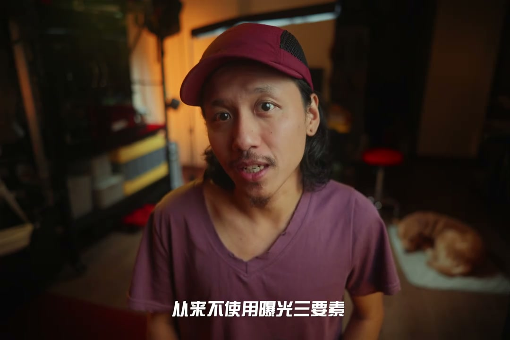
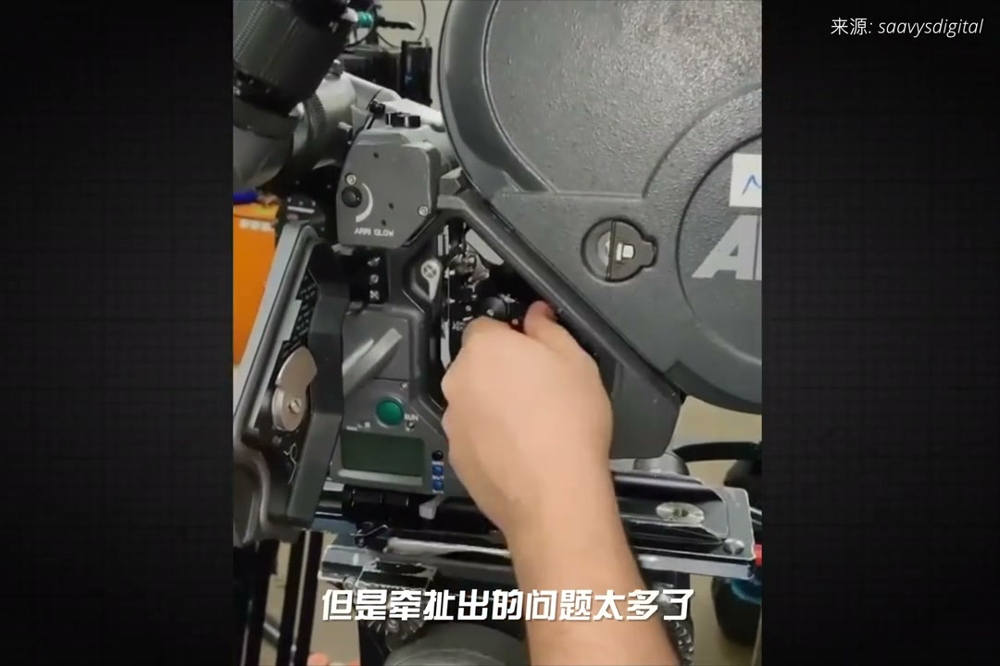
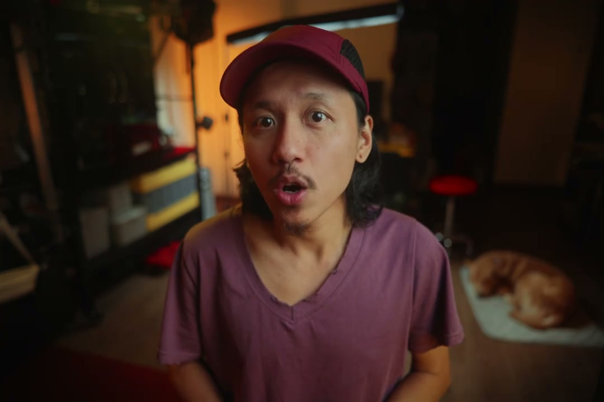

01
中文
必定都逃不过苦学这三座曝光基石。
EN
You can't escape studying these three exposure cornerstones.
表达提示three cornerstones（三座基石）

Scene English · 摄影 · 感光度原理
Why Can't You Touch ISO? The Habit Goes Back to Film!
🎧 语音讲解
Opening: why have aperture, shutter, and I…
情境视频时代让ISO失效。
必定都逃不过苦学这三座曝光基石。
You can't escape studying these three exposure cornerstones.
表达提示three cornerstones（三座基石）
视频创作者和传统影视工业者之间的界限已经越来越模糊。
The line between video creators and film-industry people blurs.
表达提示blurring line（界限模糊）
专业的电影人从来不使用曝光三要素。
Professional filmmakers never use the exposure triangle.
表达提示never use it（从不使用）
three cornerstones（三座基石
blurring line（界限模糊

Film era: can't change rolls: modern camer…
情境胶卷上机后无法随意更换。
现代相机里有一二十个ISO档位让我们随时调用，但电影工业里感光度只有一个，ISO800。
Modern cameras offer many ISO settings, but film uses only one: ISO 800.
表达提示only ISO 800（只有ISO800）
胶卷只要挂上摄影机就无法更换，也不是无法更换，但是牵扯出的问题太多了。
Film once loaded can't be swapped easily—too many problems follow.
表达提示can't swap film（无法换卷）
only ISO 800（只有ISO800
can't swap film（无法换卷

The cost of swapping rolls: film can't be …
情境换卷代价大，所以锁定感光度。
胶片是无法回看的，随意更换胶卷会打乱拍摄的进度表。
Film can't be reviewed; swapping rolls breaks the schedule.
表达提示breaks schedule（打乱进度）
记录工作如果稍有疏忽，会造成后期冲印流程中不可逆转的事故。
A logging slip causes irreversible accidents in processing.
表达提示irreversible accidents（不可逆事故）
任何一个现在我们看似翻江倒海的动作，都远比以前换一盘胶卷保险的多。
Any extreme action now is far safer than swapping a roll back then.
表达提示safer than before（更保险）
breaks schedule（打乱进度
safer than before（更保险

Film as an artistic tool: in the film era,…
情境原生感光度是画质最好的档位。
胶卷的ASA和色温都被视作艺术表现工具，而不是曝光工具。
Film ASA and color temp were artistic tools, not exposure tools.
表达提示artistic tool（艺术工具）
除了原生感光度，其他的感光度是模拟出来的，也称数字增益。
Other than native ISO, every setting is simulated—digital gain.
表达提示digital gain（数字增益）
原生感光度是一台摄影机动态范围最大、画质最好的档位。
Native ISO has maximum dynamic range and best quality.
表达提示native ISO（原生感光度）
artistic tool（艺术工具
digital gain（数字增益

800 and the dual-native trend: to get the …
情境ISO800是黄金标准，双原生是趋势。
ARRI摄影机的原生ISO就是800，被誉为黄金标准。
ARRI's native ISO is 800—the gold standard.
表达提示gold standard（黄金标准）
白天加一片ND，晚上也不需要过分曝光。
Add ND by day; no overexposure needed at night.
表达提示ND by day（白天ND）
也有导演不遵守这套法则，故意提高感光度去获得高噪点的画面。
Some directors raise ISO deliberately for grainy looks.
表达提示break the rule（打破法则）
当下最火热的技术方向是双原生甚至三原生ISO。
The hottest direction is dual-native or even triple-native ISO.
表达提示dual-native ISO（双原生ISO）
gold standard（黄金标准
ND by day（白天ND
说电影只认一个ISO
说换卷代价
说胶片是艺术工具
说原生感光度
说800黄金标准
电影工业只有ISO800。
换卷代价高不如调光。
ASA是艺术工具。
非原生感光度是数字增益。
各厂默契选800。